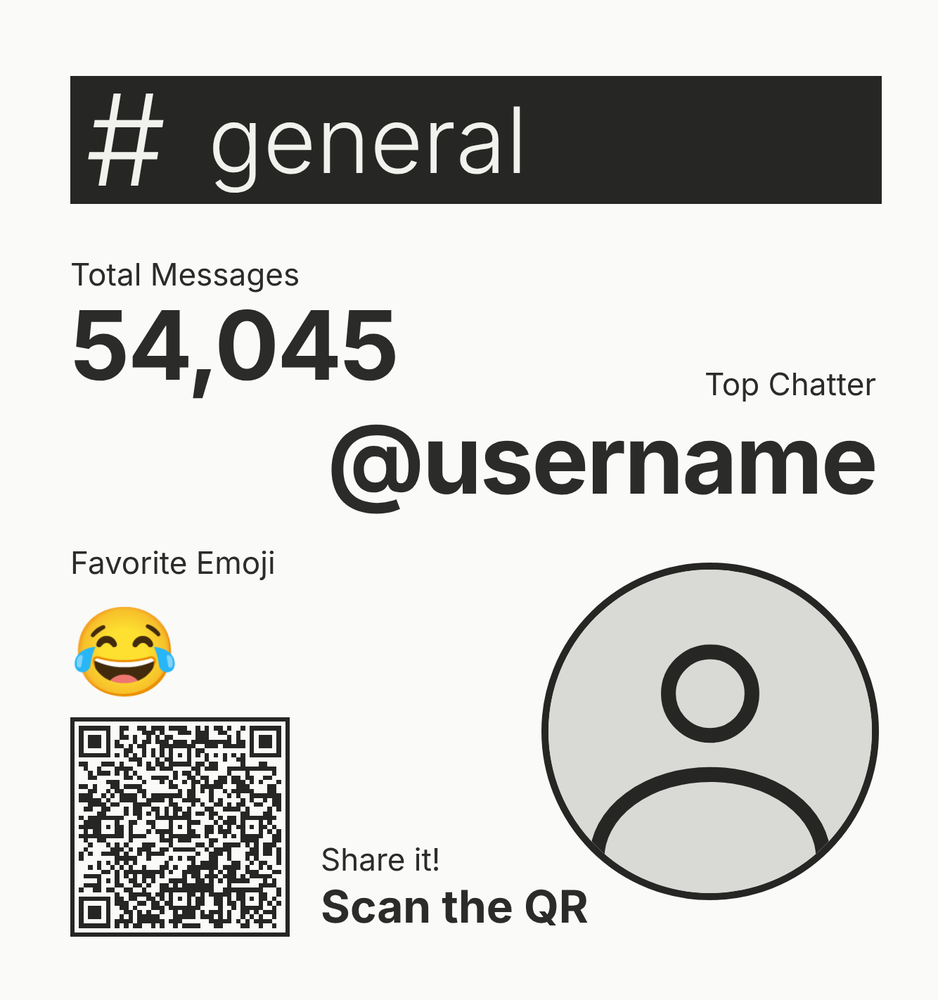

stats cards for your discord channels
Wrapped is a Discord bot that turns the last 30 days of a channel into a card with the total messages, the top chatter and the favorite emoji. Type /wrapped in any channel, then share the picture or scan its QR code to open the card on a page where you can copy the link or download the image.

Pick your server and approve the permissions. It only asks to see channels, read their history and attach files.
Choose a channel and how many days back, up to 90. Busy channels take a little longer.
Post the picture, or scan the QR code on it to open the card in your browser.
Wrapped counts who posted, when, and which reactions were used. It does not read what anyone wrote and does not save messages. Each card shows the most active member of the channel by name and avatar.